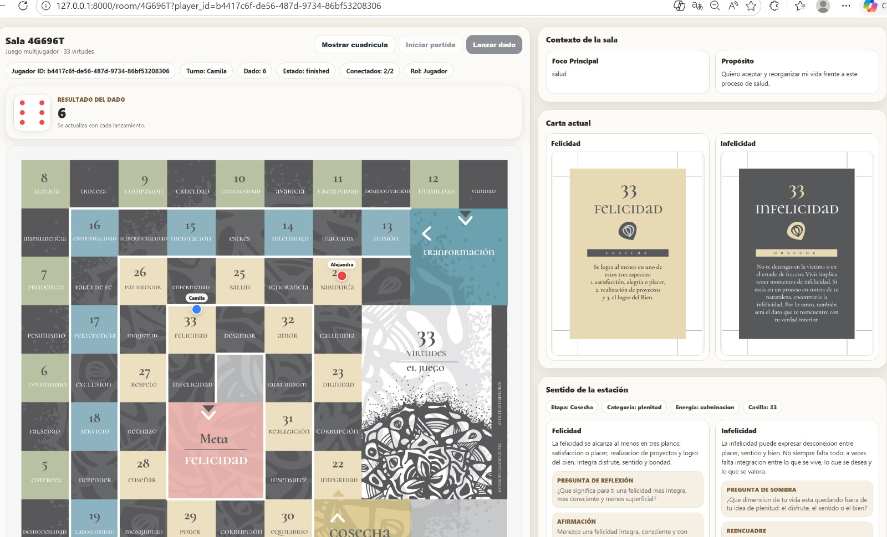
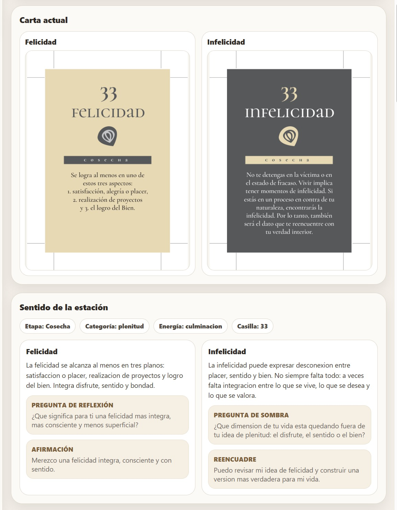
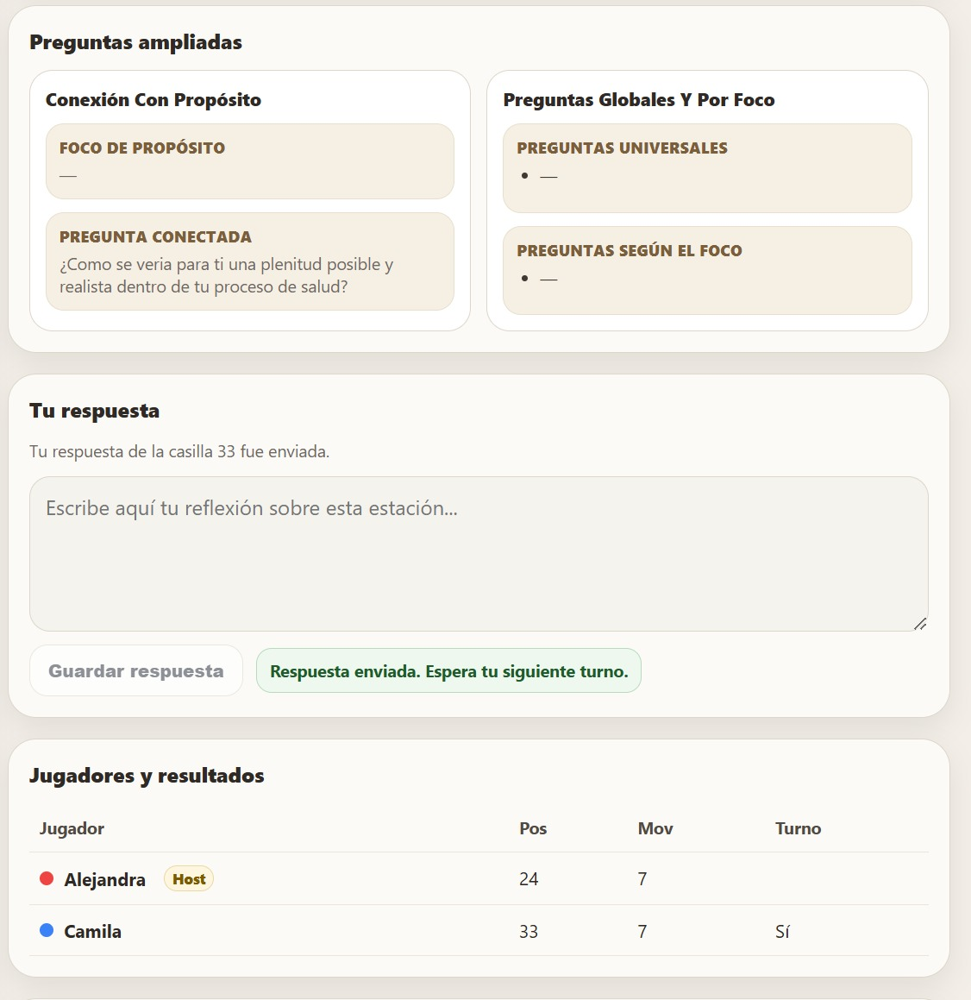
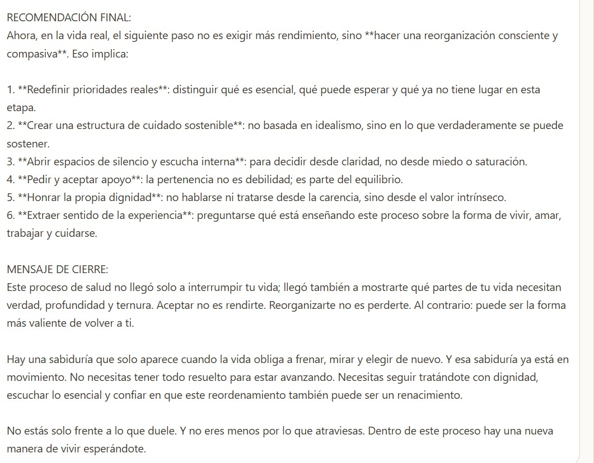
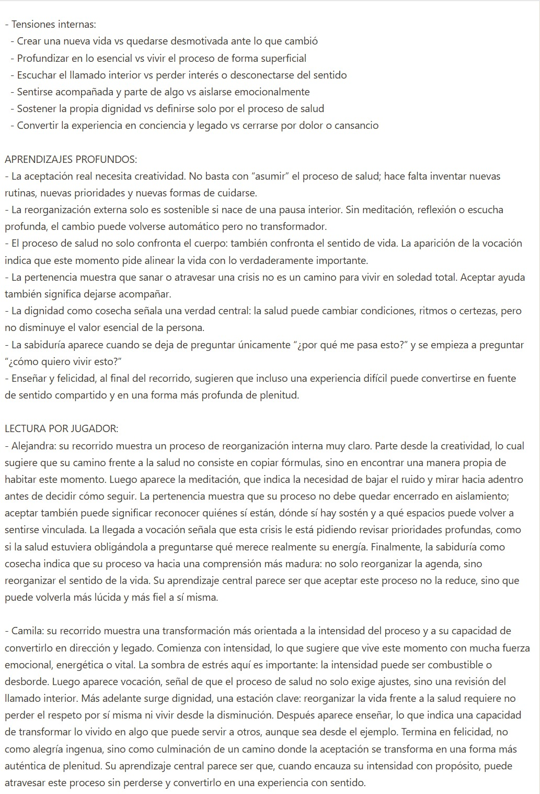
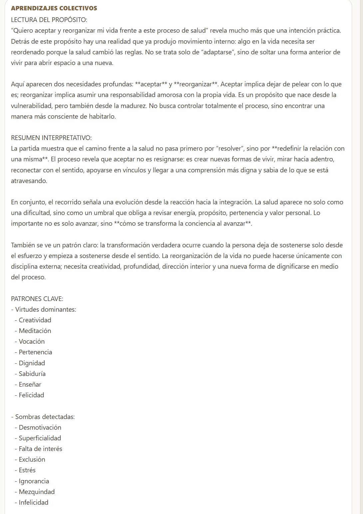
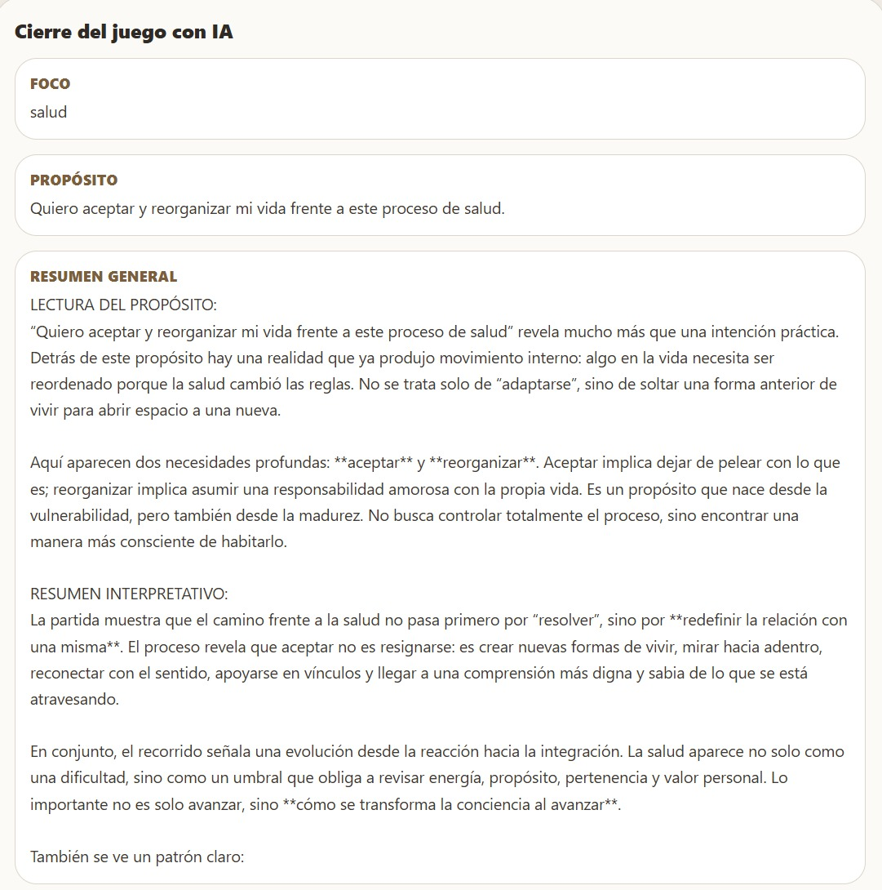
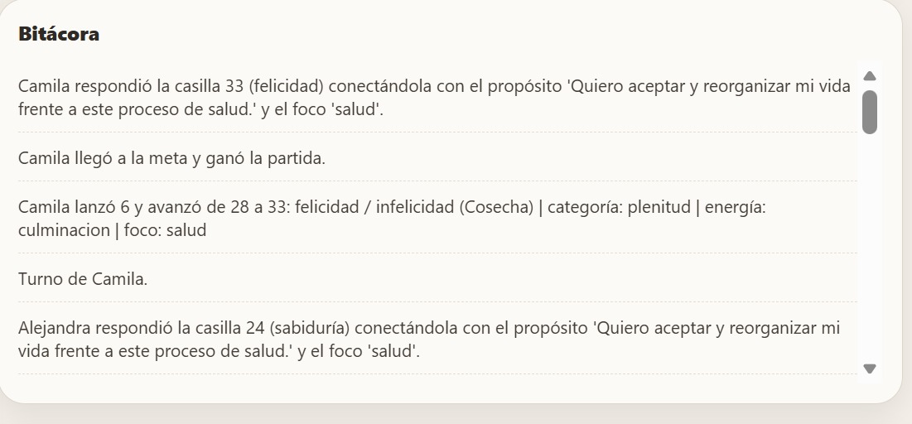

Desarrollo humano, catalización certificada e IA aplicada
Axiora integra el juego de las 33 virtudes, una red de Catalizadores Axiora y una herramienta de IA personalizable con documentos, artículos, libros, estrategias y contenidos propios de cada organización.



Axiora es una propuesta de desarrollo humano y transformación organizacional que articula una experiencia lúdica, una metodología de acompañamiento y una capa de inteligencia artificial para procesos de reflexión, conversación, aprendizaje y evolución.
Un recorrido experiencial que permite explorar luces, sombras, propósito, decisiones y patrones personales o grupales a través de estaciones simbólicas.
El proceso no depende solo del juego: se fortalece con profesionales formados para interpretar dinámicas, sostener conversaciones profundas y dar dirección metodológica al recorrido.
Una herramienta de IA configurable con conocimiento propio para ampliar análisis, acompañar procesos y sostener continuidad antes, durante y después de cada sala.
Axiora no se presenta solo como un juego. Se presenta como un sistema vivo de formación, catalización y acompañamiento que ayuda a que la experiencia tenga profundidad, continuidad y capacidad de implementación.
Cada sala puede abrir conversaciones significativas sobre salud emocional, vínculos, liderazgo, propósito, cambios, conflictos, bienestar y desarrollo humano.
El Catalizador puede organizar grupos, crear salas, acompañar múltiples usuarios y utilizar la IA como soporte estructural para sostener calidad y coherencia metodológica.
El modelo combina preparación, experiencia guiada y continuidad. No es una dinámica aislada: es un ecosistema que puede usarse en procesos individuales, grupales y corporativos.
Se establece foco, propósito, población objetivo y tipo de intervención: individual, equipos o cultura.
El Catalizador organiza grupos y dispone salas según número de participantes, objetivos y ruta metodológica.
Las personas recorren el juego, responden preguntas y generan insumos de reflexión acompañados por la catalización metodológica.
La IA personalizada ayuda a consolidar hallazgos, preguntas, patrones y rutas de trabajo según el contexto definido.
Uno de los diferenciales más potentes de Axiora es que no se limita a un chatbot genérico. La solución incluye acceso a una herramienta de IA que puede personalizarse con conocimiento propio de la metodología y con materiales específicos del cliente o del programa.
Los Catalizadores Axiora son profesionales certificados para activar procesos de transformación humana y organizacional mediante la metodología Axiora. No son únicamente guías del juego: son agentes formados para interpretar dinámicas, sostener conversaciones profundas y acompañar cambios con criterio metodológico, sensibilidad humana y visión estratégica.
Conducen salas y recorridos vivenciales que generan reflexión, conciencia y evolución en personas, equipos y organizaciones.
Leen dinámicas individuales y grupales para orientar conversaciones significativas, identificar tensiones y abrir rutas de comprensión.
Traducen reflexiones en decisiones, aprendizajes y acciones aplicables a contextos personales, corporativos y organizacionales.
No imponen respuestas: crean condiciones para que emerjan comprensiones profundas, decisiones auténticas y transformaciones duraderas.
Utilizan la IA Axiora como soporte para ampliar análisis, enriquecer lecturas y sostener continuidad metodológica antes, durante y después de cada sala.
Se convierten en agentes clave para fortalecer cultura, mejorar clima, acompañar liderazgo y dinamizar procesos de talento humano.
Un Catalizador Axiora es un profesional certificado capaz de activar procesos de transformación humana mediante experiencias guiadas, inteligencia humanista e inteligencia artificial aplicada.
Transformamos los procesos de gestión humana en experiencias de evolución organizacional, integrando metodologías experienciales, catalización especializada e inteligencia artificial aplicada.
Alineamos talento, estructura organizacional y objetivos de crecimiento para fortalecer el desarrollo sostenible de la organización.
Diagnosticamos dinámicas internas, identificamos tensiones y diseñamos acciones que mejoran el bienestar, la convivencia y la confianza laboral.
Facilitamos procesos de transformación de conflictos desde una mirada humanista, promoviendo comunicación efectiva y acuerdos sostenibles.
Diseñamos evaluaciones integrales que valoran resultados, competencias humanas, evolución individual y contribución real al equipo.
Fortalecemos equipos mediante experiencias guiadas que mejoran cohesión, confianza, liderazgo, colaboración y lectura de dinámicas internas.
Creamos espacios estructurados de retroalimentación para optimizar prácticas, revisar flujos internos y fortalecer el aprendizaje organizacional.
A través de Axiora y nuestras metodologías de Inteligencia Humanista combinamos lectura organizacional, catalización especializada, herramientas de IA personalizable y experiencias transformadoras para generar impacto real en las organizaciones.
Axiora requiere mucho más que conocer el juego. Por eso la propuesta contempla una ruta de capacitación para asegurar una aplicación seria, ética y metodológicamente sólida.
Comprensión del modelo, las 33 virtudes, los focos de trabajo, la lectura de la experiencia y la lógica de la sala.
Activación de grupos, lectura del proceso, manejo del ritmo, preguntas poderosas y acompañamiento de conversaciones profundas.
Integración de la IA Axiora, uso de materiales propios, análisis de recorridos y aplicación de conocimiento institucional.
Axiora permite trabajar desarrollo humano con una estructura concreta. No se queda en discurso inspiracional: facilita interacción, activa preguntas, recoge respuestas y abre rutas de mejora aplicables a equipos reales.
Útil para programas de bienestar, acompañamiento, conversaciones de clima, fortalecimiento del vínculo y procesos de desarrollo humano.
Ayuda a trabajar propósito, comunicación, manejo de tensiones, autorreflexión, conciencia de equipo y alineación cultural.
Sirve para integrar grupos, abrir espacios de escucha, acompañar cambios y favorecer conversaciones que normalmente no se dan en formatos tradicionales.
Estas imágenes muestran el juego en operación, la interfaz de sala, el cierre con IA, la bitácora, las preguntas ampliadas y la experiencia visual del recorrido.

Resumen general con IA
Lectura por jugador
Aprendizajes colectivos
Cierre del juego con IA
Bitácora del procesoAxiora no solo forma personas para usar un juego. Forma Catalizadores capaces de conducir experiencias con criterio metodológico, profundidad humana y apoyo de inteligencia artificial personalizable.